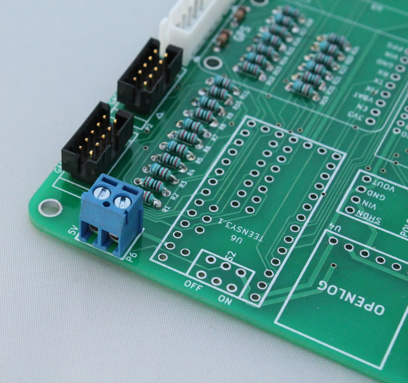
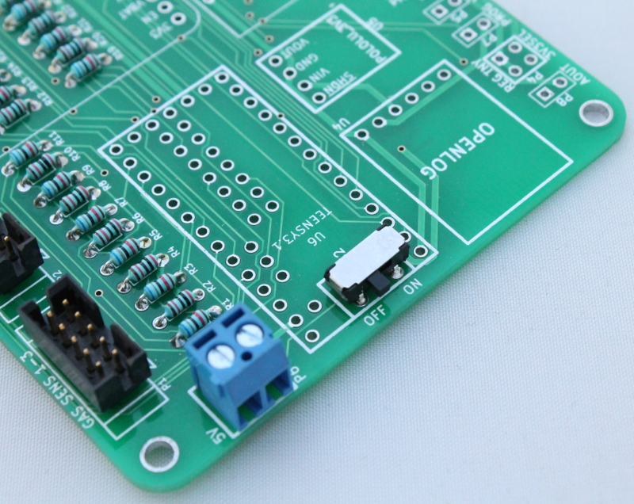

4) External 5V power¶
Optional source of higher current power input which can be used as an alternative to powering from the USB connector on the Teensy (500 mA limit). The slide switch (S2) can be used as an on/off switch for the device when using the external 5V power.
Solder the blue 2-position terminal block onto the board as shown below. Make sure the terminal block is positioned with the connector side facing out.

Solder the switch onto the board as shown below.
